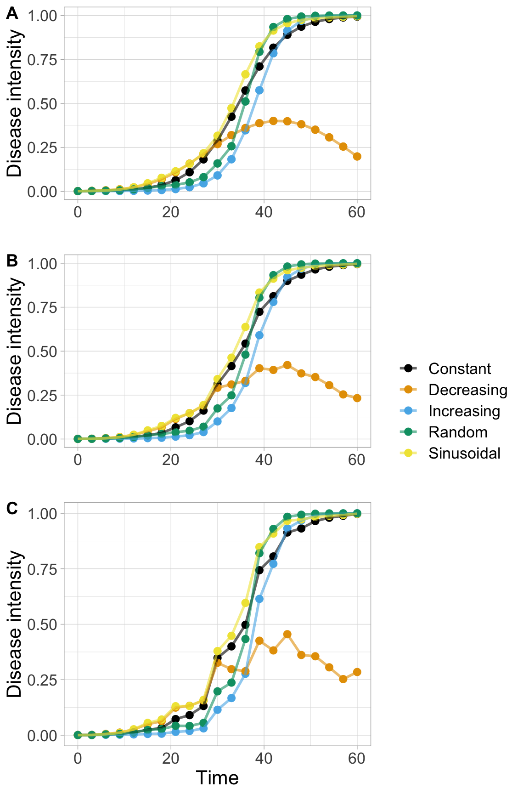
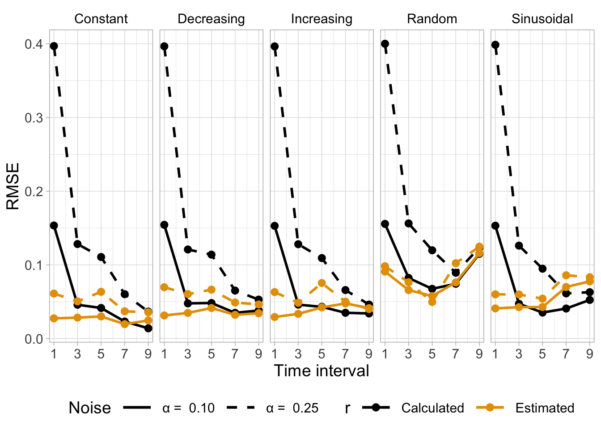

Three figures were prepared to show in the main text of the manuscript.
Fig. 1. Diagram
A diagram was created using Google Draw.
Fig. 1. Workflow of the approach for generating synthetic epidemics by the differential logistic model with different patterns of time-varying apparent infection rate (rt), and evaluating the performance of a Sequential Importance Resampling Particle Filter (SIR-PF) algorithm to obtain/update rtover time. The error of the PF-derived estimates and logit-derived calculated rates were evaluated by the root mean square error (RMSE) as a measure of accuracy. SIF-PF scheme adapted from Dias et al. (2017).
Fig 2. Disease curves
A figure panel with three plots, each depicting five DPCs for each r(y) pattern, varying the level of noise applied to the measures were prepared.
plot_grid(
plot_grid(logistic_all3 %>%
filter(time_interval2 == 3) %>%
ggplot() +
geom_point(aes(time, y, color = infection_type), size = 2.5, alpha = 1) +
geom_line(aes(time, y, color = infection_type), size = 1, alpha = .6) +
scale_fill_manual(values = "gray") +
scale_color_colorblind() +
labs(
x = "Time",
y = "Disease intensity", color = "AIR"
) +
theme(text = element_text(size = 16), legend.position = "none", axis.title.x = element_text(color = "white")) +
scale_y_continuous(breaks = seq(0, 1, 0.25)),
logistic_all3 %>%
filter(time_interval2 == 3 & noise2 == 0.1) %>%
ggplot() +
geom_point(aes(time, realSmeas, color = infection_type), size = 2.5, alpha = 1) +
geom_line(aes(time, realSmeas, color = infection_type), size = 1, alpha = .6) +
scale_fill_manual(values = "gray") +
scale_color_colorblind() +
labs(
x = "Time",
y = "Disease intensity", color = "AIR"
) +
theme(text = element_text(size = 16), legend.position = "none", axis.title.x = element_text(color = "white")) +
scale_y_continuous(breaks = seq(0, 1, 0.25)),
logistic_all3 %>%
filter(time_interval2 == 3 & noise2 == 0.25) %>%
ggplot() +
geom_point(aes(time, realSmeas, color = infection_type), size = 2.5, alpha = 1) +
geom_line(aes(time, realSmeas, color = infection_type), size = 1, alpha = .6) +
scale_fill_manual(values = "gray") +
scale_color_colorblind() +
labs(
x = "Time",
y = "Disease intensity", color = ""
) +
theme(text = element_text(size = 16), legend.position = "none") +
scale_y_continuous(breaks = seq(0, 1, 0.25)),
nrow = 3, rel_heights = c(0.83, 0.83, 1), labels = "AUTO"
),
a = get_legend(logistic_all3 %>%
filter(time_interval2 == 3 & noise2 == 0.25) %>%
ggplot() +
geom_point(aes(time, realSmeas, color = infection_type), size = 2.5, alpha = 1) +
geom_line(aes(time, realSmeas, color = infection_type), size = 1, alpha = .6) +
scale_fill_manual(values = "gray") +
scale_color_colorblind() +
labs(
x = "Time",
y = "Disease intensity", color = ""
) +
theme(text = element_text(size = 16), legend.position = "right") +
scale_y_continuous(breaks = seq(0, 1, 0.25))), rel_widths = c(1, 0.4)
)

ggsave("figs/fig2.png", dpi = 300, height = 9, width = 7)
Fig. 2. Generation of synthetic disease progress curves (DPCs) data using a differential logistic model with five different temporal patterns of rt(colored dotted lines - see equations in Table 1). (A) No noise in disease intensity; (B) 10% noise (=0.1); and (C) 25% noise (=0.25).
Fig. 3. Time varying r
We finally produced for the main text of the article one figure with four epidemics each depicting either 1 or 5 time units as interval and either 0.1 or 0.25 noise in the measures.
# plot_grid(
logistic_all3 %>%
mutate(Approach = "Estimated") %>%
bind_rows(calculated_r %>%
mutate(Approach = "Calculated", sinti = r_calc)) %>%
filter(infection_type == "Increasing") %>%
filter(time_interval2 %in% c(1, 5)) %>%
ggplot() +
geom_ribbon(aes(time, ymin = ubdsiro, ymax = lbdsiro, alpha = Approach, fill = "99% CI"), stat = "identity") +
geom_line(aes(time, inf_rate, color = time_interval), size = 1.5) +
guides(alpha = guide_legend("none")) +
geom_point(aes(time, sinti)) +
# facet_wrap(noise+time_interval~Approach)+
facet_grid(noise + time_interval ~ Approach) +
scale_alpha_discrete(range = c(0, 0.5)) +
scale_color_colorblind() +
scale_fill_manual(values = "gray") +
labs(x = "Time", y = "Apparent infection rate", fill = "", color = "") +
theme(
legend.position = "bottom", text = element_text(size = 16),
strip.text = element_text(color = "black"),
strip.background = element_rect(fill = "white")
)
## Warning: Using alpha for a discrete variable is not advised.
## Warning: Removed 4 rows containing missing values (geom_point).

ggsave("figs/Fig3.png", dpi = 300, height = 8, width = 6)
## Warning: Removed 4 rows containing missing values (geom_point).
Fig. 3. Increasing apparent infection rate rt obtained by a rearrangement of the logistic model (left panel) or an estimation method based on the sequential importance resampling particle-filter approach (SIR-PF) (right panel) for scenarios of two intervals between two assessments (delta t =1 time unit and delta t = 5 time units) and two levels of noise (alpha =0.10 and alpha =0.25)assigned to disease intensity data. Solid line represents original simulated increasing r values and particle filter- and logit-derived rt are represented by the dots at the respective panel.
Fig. 4. RMSE
In the article, we prepared a figure depecting the RMSE of the estimates by both methods for each epidemic.
ggplot() +
geom_line(
data = acuracy_calc, aes(time_interval2, RMS, color = "Calculated", linetype = as.factor(noise)),
size = 1
) +
geom_point(
data = acuracy_calc, aes(time_interval2, RMS, color = "Calculated"),
size = 2.5
) +
geom_line(
data = acuracy_logi, aes(time_interval2, RMS, color = "Estimated", linetype = as.factor(noise)),
size = 1
) +
geom_point(
data = acuracy_logi, aes(time_interval2, RMS, color = "Estimated", ),
size = 2.5
) +
scale_color_colorblind("r") +
scale_x_continuous(breaks = seq(1, 9, by = 2)) +
scale_linetype_manual(values = c("solid", "dashed")) +
facet_grid(~infection_type) +
guides(
linetype = guide_legend(keywidth = 2, keyheight = 1),
color = guide_legend(keywidth = 2, keyheight = 1)
) +
labs(x = "Time interval", y = "RMSE", linetype = "Noise") +
theme(
legend.position = "bottom",
text = element_text(size = 14),
strip.text = element_text(color = "black"),
strip.background = element_rect(fill = "white")
)

ggsave("figs/fig4.png", dpi = 300, height = 5, width = 11)
Fig. 4. Accuracy evaluation based on the root mean square error (RMSE) of estimation/calculation of the apparent infection rate rt using two methods for recovering it, the first a sequential importance resampling particle-filter (SIR-PF), and the second based on the rearrangement of the logistic model, both compared with simulated rates to account for five systematic rt patterns (each plot in the panel). The methods were evaluated for different time length (in time units) between two assessments and two levels of noise level assigned to simulated disease intensity simulated by a differential logistic model.
JSBGaWd1cmVzCgpUaHJlZSBmaWd1cmVzIHdlcmUgcHJlcGFyZWQgdG8gc2hvdyBpbiB0aGUgbWFpbiB0ZXh0IG9mIHRoZSBtYW51c2NyaXB0LgoKCiMjIEZpZy4gMS4gRGlhZ3JhbQoKQSBkaWFncmFtIHdhcyBjcmVhdGVkIHVzaW5nIEdvb2dsZSBEcmF3LgoKPGRpdiBhbGlnbiA9IGNlbnRlcj4KPGltZyBzcmMgPSAiZmlncy9maWcxLnBuZyI+CjwvZGl2PgoKRmlnLiAxLiBXb3JrZmxvdyBvZiB0aGUgYXBwcm9hY2ggZm9yIGdlbmVyYXRpbmcgc3ludGhldGljIGVwaWRlbWljcyBieSB0aGUgZGlmZmVyZW50aWFsIGxvZ2lzdGljIG1vZGVsIHdpdGggZGlmZmVyZW50IHBhdHRlcm5zIG9mIHRpbWUtdmFyeWluZyBhcHBhcmVudCBpbmZlY3Rpb24gcmF0ZSAocnQpLCBhbmQgZXZhbHVhdGluZyB0aGUgcGVyZm9ybWFuY2Ugb2YgYSBTZXF1ZW50aWFsIEltcG9ydGFuY2UgUmVzYW1wbGluZyBQYXJ0aWNsZSBGaWx0ZXIgKFNJUi1QRikgYWxnb3JpdGhtIHRvIG9idGFpbi91cGRhdGUgcnRvdmVyIHRpbWUuIFRoZSBlcnJvciBvZiB0aGUgUEYtZGVyaXZlZCBlc3RpbWF0ZXMgYW5kIGxvZ2l0LWRlcml2ZWQgY2FsY3VsYXRlZCByYXRlcyB3ZXJlIGV2YWx1YXRlZCBieSB0aGUgcm9vdCBtZWFuIHNxdWFyZSBlcnJvciAoUk1TRSkgYXMgYSBtZWFzdXJlIG9mIGFjY3VyYWN5LiBTSUYtUEYgc2NoZW1lIGFkYXB0ZWQgZnJvbSBEaWFzIGV0IGFsLiAoMjAxNykuCgojIyBGaWcgMi4gRGlzZWFzZSBjdXJ2ZXMKCkEgZmlndXJlIHBhbmVsIHdpdGggdGhyZWUgcGxvdHMsIGVhY2ggZGVwaWN0aW5nIGZpdmUgRFBDcyBmb3IgZWFjaCBfcih5KV8gcGF0dGVybiwgdmFyeWluZyB0aGUgbGV2ZWwgb2Ygbm9pc2UgYXBwbGllZCB0byB0aGUgbWVhc3VyZXMgd2VyZSBwcmVwYXJlZC4KCmBgYHtyIGZpZy5oZWlnaHQ9OSwgZmlnLndpZHRoPTZ9CnBsb3RfZ3JpZCgKICBwbG90X2dyaWQobG9naXN0aWNfYWxsMyAlPiUKICAgIGZpbHRlcih0aW1lX2ludGVydmFsMiA9PSAzKSAlPiUKICAgIGdncGxvdCgpICsKICAgIGdlb21fcG9pbnQoYWVzKHRpbWUsIHksIGNvbG9yID0gaW5mZWN0aW9uX3R5cGUpLCBzaXplID0gMi41LCBhbHBoYSA9IDEpICsKICAgIGdlb21fbGluZShhZXModGltZSwgeSwgY29sb3IgPSBpbmZlY3Rpb25fdHlwZSksIHNpemUgPSAxLCBhbHBoYSA9IC42KSArCiAgICBzY2FsZV9maWxsX21hbnVhbCh2YWx1ZXMgPSAiZ3JheSIpICsKICAgIHNjYWxlX2NvbG9yX2NvbG9yYmxpbmQoKSArCiAgICBsYWJzKAogICAgICB4ID0gIlRpbWUiLAogICAgICB5ID0gIkRpc2Vhc2UgaW50ZW5zaXR5IiwgY29sb3IgPSAiQUlSIgogICAgKSArCiAgICB0aGVtZSh0ZXh0ID0gZWxlbWVudF90ZXh0KHNpemUgPSAxNiksIGxlZ2VuZC5wb3NpdGlvbiA9ICJub25lIiwgYXhpcy50aXRsZS54ID0gZWxlbWVudF90ZXh0KGNvbG9yID0gIndoaXRlIikpICsKICAgIHNjYWxlX3lfY29udGludW91cyhicmVha3MgPSBzZXEoMCwgMSwgMC4yNSkpLAoKICBsb2dpc3RpY19hbGwzICU+JQogICAgZmlsdGVyKHRpbWVfaW50ZXJ2YWwyID09IDMgJiBub2lzZTIgPT0gMC4xKSAlPiUKICAgIGdncGxvdCgpICsKICAgIGdlb21fcG9pbnQoYWVzKHRpbWUsIHJlYWxTbWVhcywgY29sb3IgPSBpbmZlY3Rpb25fdHlwZSksIHNpemUgPSAyLjUsIGFscGhhID0gMSkgKwogICAgZ2VvbV9saW5lKGFlcyh0aW1lLCByZWFsU21lYXMsIGNvbG9yID0gaW5mZWN0aW9uX3R5cGUpLCBzaXplID0gMSwgYWxwaGEgPSAuNikgKwogICAgc2NhbGVfZmlsbF9tYW51YWwodmFsdWVzID0gImdyYXkiKSArCiAgICBzY2FsZV9jb2xvcl9jb2xvcmJsaW5kKCkgKwogICAgbGFicygKICAgICAgeCA9ICJUaW1lIiwKICAgICAgeSA9ICJEaXNlYXNlIGludGVuc2l0eSIsIGNvbG9yID0gIkFJUiIKICAgICkgKwogICAgdGhlbWUodGV4dCA9IGVsZW1lbnRfdGV4dChzaXplID0gMTYpLCBsZWdlbmQucG9zaXRpb24gPSAibm9uZSIsIGF4aXMudGl0bGUueCA9IGVsZW1lbnRfdGV4dChjb2xvciA9ICJ3aGl0ZSIpKSArCiAgICBzY2FsZV95X2NvbnRpbnVvdXMoYnJlYWtzID0gc2VxKDAsIDEsIDAuMjUpKSwKCiAgbG9naXN0aWNfYWxsMyAlPiUKICAgIGZpbHRlcih0aW1lX2ludGVydmFsMiA9PSAzICYgbm9pc2UyID09IDAuMjUpICU+JQogICAgZ2dwbG90KCkgKwogICAgZ2VvbV9wb2ludChhZXModGltZSwgcmVhbFNtZWFzLCBjb2xvciA9IGluZmVjdGlvbl90eXBlKSwgc2l6ZSA9IDIuNSwgYWxwaGEgPSAxKSArCiAgICBnZW9tX2xpbmUoYWVzKHRpbWUsIHJlYWxTbWVhcywgY29sb3IgPSBpbmZlY3Rpb25fdHlwZSksIHNpemUgPSAxLCBhbHBoYSA9IC42KSArCgogICAgc2NhbGVfZmlsbF9tYW51YWwodmFsdWVzID0gImdyYXkiKSArCiAgICBzY2FsZV9jb2xvcl9jb2xvcmJsaW5kKCkgKwogICAgbGFicygKICAgICAgeCA9ICJUaW1lIiwKICAgICAgeSA9ICJEaXNlYXNlIGludGVuc2l0eSIsIGNvbG9yID0gIiIKICAgICkgKwogICAgdGhlbWUodGV4dCA9IGVsZW1lbnRfdGV4dChzaXplID0gMTYpLCBsZWdlbmQucG9zaXRpb24gPSAibm9uZSIpICsKICAgIHNjYWxlX3lfY29udGludW91cyhicmVha3MgPSBzZXEoMCwgMSwgMC4yNSkpLAogIG5yb3cgPSAzLCByZWxfaGVpZ2h0cyA9IGMoMC44MywgMC44MywgMSksIGxhYmVscyA9ICJBVVRPIgogICksCiAgYSA9IGdldF9sZWdlbmQobG9naXN0aWNfYWxsMyAlPiUKICAgIGZpbHRlcih0aW1lX2ludGVydmFsMiA9PSAzICYgbm9pc2UyID09IDAuMjUpICU+JQogICAgZ2dwbG90KCkgKwogICAgZ2VvbV9wb2ludChhZXModGltZSwgcmVhbFNtZWFzLCBjb2xvciA9IGluZmVjdGlvbl90eXBlKSwgc2l6ZSA9IDIuNSwgYWxwaGEgPSAxKSArCiAgICBnZW9tX2xpbmUoYWVzKHRpbWUsIHJlYWxTbWVhcywgY29sb3IgPSBpbmZlY3Rpb25fdHlwZSksIHNpemUgPSAxLCBhbHBoYSA9IC42KSArCgogICAgc2NhbGVfZmlsbF9tYW51YWwodmFsdWVzID0gImdyYXkiKSArCiAgICBzY2FsZV9jb2xvcl9jb2xvcmJsaW5kKCkgKwogICAgbGFicygKICAgICAgeCA9ICJUaW1lIiwKICAgICAgeSA9ICJEaXNlYXNlIGludGVuc2l0eSIsIGNvbG9yID0gIiIKICAgICkgKwogICAgdGhlbWUodGV4dCA9IGVsZW1lbnRfdGV4dChzaXplID0gMTYpLCBsZWdlbmQucG9zaXRpb24gPSAicmlnaHQiKSArCiAgICBzY2FsZV95X2NvbnRpbnVvdXMoYnJlYWtzID0gc2VxKDAsIDEsIDAuMjUpKSksIHJlbF93aWR0aHMgPSBjKDEsIDAuNCkKKQoKZ2dzYXZlKCJmaWdzL2ZpZzIucG5nIiwgZHBpID0gMzAwLCBoZWlnaHQgPSA5LCB3aWR0aCA9IDcpCmBgYAoKCkZpZy4gMi4gR2VuZXJhdGlvbiBvZiBzeW50aGV0aWMgZGlzZWFzZSBwcm9ncmVzcyBjdXJ2ZXMgKERQQ3MpIGRhdGEgdXNpbmcgYSBkaWZmZXJlbnRpYWwgbG9naXN0aWMgbW9kZWwgd2l0aCBmaXZlIGRpZmZlcmVudCB0ZW1wb3JhbCBwYXR0ZXJucyBvZiBydChjb2xvcmVkIGRvdHRlZCBsaW5lcyAtIHNlZSBlcXVhdGlvbnMgaW4gVGFibGUgMSkuIChBKSBObyBub2lzZSBpbiBkaXNlYXNlIGludGVuc2l0eTsgKEIpIDEwJSBub2lzZSAoPTAuMSk7IGFuZCAoQykgMjUlIG5vaXNlICg9MC4yNSkuCgojIyBGaWcuIDMuIFRpbWUgdmFyeWluZyByCgpXZSBmaW5hbGx5IHByb2R1Y2VkIGZvciB0aGUgbWFpbiB0ZXh0IG9mIHRoZSBhcnRpY2xlIG9uZSBmaWd1cmUgd2l0aCBmb3VyIGVwaWRlbWljcyBlYWNoIGRlcGljdGluZyBlaXRoZXIgMSBvciA1IHRpbWUgdW5pdHMgYXMgaW50ZXJ2YWwgYW5kIGVpdGhlciAwLjEgb3IgMC4yNSBub2lzZSBpbiB0aGUgbWVhc3VyZXMuCgoKYGBge3IgZmlnLmhlaWdodD04LCBmaWcud2lkdGg9N30KIyBwbG90X2dyaWQoCmxvZ2lzdGljX2FsbDMgJT4lCiAgbXV0YXRlKEFwcHJvYWNoID0gIkVzdGltYXRlZCIpICU+JQogIGJpbmRfcm93cyhjYWxjdWxhdGVkX3IgJT4lCiAgICBtdXRhdGUoQXBwcm9hY2ggPSAiQ2FsY3VsYXRlZCIsIHNpbnRpID0gcl9jYWxjKSkgJT4lCiAgZmlsdGVyKGluZmVjdGlvbl90eXBlID09ICJJbmNyZWFzaW5nIikgJT4lCiAgZmlsdGVyKHRpbWVfaW50ZXJ2YWwyICVpbiUgYygxLCA1KSkgJT4lCiAgZ2dwbG90KCkgKwogIGdlb21fcmliYm9uKGFlcyh0aW1lLCB5bWluID0gdWJkc2lybywgeW1heCA9IGxiZHNpcm8sIGFscGhhID0gQXBwcm9hY2gsIGZpbGwgPSAiOTklIENJIiksIHN0YXQgPSAiaWRlbnRpdHkiKSArCiAgZ2VvbV9saW5lKGFlcyh0aW1lLCBpbmZfcmF0ZSwgY29sb3IgPSB0aW1lX2ludGVydmFsKSwgc2l6ZSA9IDEuNSkgKwogIGd1aWRlcyhhbHBoYSA9IGd1aWRlX2xlZ2VuZCgibm9uZSIpKSArCiAgZ2VvbV9wb2ludChhZXModGltZSwgc2ludGkpKSArCiAgIyBmYWNldF93cmFwKG5vaXNlK3RpbWVfaW50ZXJ2YWx+QXBwcm9hY2gpKwogIGZhY2V0X2dyaWQobm9pc2UgKyB0aW1lX2ludGVydmFsIH4gQXBwcm9hY2gpICsKICBzY2FsZV9hbHBoYV9kaXNjcmV0ZShyYW5nZSA9IGMoMCwgMC41KSkgKwogIHNjYWxlX2NvbG9yX2NvbG9yYmxpbmQoKSArCiAgc2NhbGVfZmlsbF9tYW51YWwodmFsdWVzID0gImdyYXkiKSArCiAgbGFicyh4ID0gIlRpbWUiLCB5ID0gIkFwcGFyZW50IGluZmVjdGlvbiByYXRlIiwgZmlsbCA9ICIiLCBjb2xvciA9ICIiKSArCiAgdGhlbWUoCiAgICBsZWdlbmQucG9zaXRpb24gPSAiYm90dG9tIiwgdGV4dCA9IGVsZW1lbnRfdGV4dChzaXplID0gMTYpLAogICAgc3RyaXAudGV4dCA9IGVsZW1lbnRfdGV4dChjb2xvciA9ICJibGFjayIpLAogICAgc3RyaXAuYmFja2dyb3VuZCA9IGVsZW1lbnRfcmVjdChmaWxsID0gIndoaXRlIikKICApCgpnZ3NhdmUoImZpZ3MvRmlnMy5wbmciLCBkcGkgPSAzMDAsIGhlaWdodCA9IDgsIHdpZHRoID0gNikKYGBgCgpGaWcuIDMuIEluY3JlYXNpbmcgYXBwYXJlbnQgaW5mZWN0aW9uIHJhdGUgcnQgb2J0YWluZWQgYnkgYSByZWFycmFuZ2VtZW50IG9mIHRoZSBsb2dpc3RpYyBtb2RlbCAobGVmdCBwYW5lbCkgb3IgYW4gZXN0aW1hdGlvbiBtZXRob2QgYmFzZWQgb24gdGhlIHNlcXVlbnRpYWwgaW1wb3J0YW5jZSByZXNhbXBsaW5nIHBhcnRpY2xlLWZpbHRlciBhcHByb2FjaCAoU0lSLVBGKSAocmlnaHQgcGFuZWwpIGZvciBzY2VuYXJpb3Mgb2YgdHdvIGludGVydmFscyBiZXR3ZWVuIHR3byBhc3Nlc3NtZW50cyAoZGVsdGEgdCA9MSB0aW1lIHVuaXQgYW5kIGRlbHRhIHQgPSA1IHRpbWUgdW5pdHMpIGFuZCB0d28gbGV2ZWxzIG9mIG5vaXNlIChhbHBoYSA9MC4xMCBhbmQgYWxwaGEgPTAuMjUpYXNzaWduZWQgdG8gZGlzZWFzZSBpbnRlbnNpdHkgZGF0YS4gU29saWQgbGluZSByZXByZXNlbnRzIG9yaWdpbmFsIHNpbXVsYXRlZCBpbmNyZWFzaW5nIHIgdmFsdWVzIGFuZCBwYXJ0aWNsZSBmaWx0ZXItIGFuZCBsb2dpdC1kZXJpdmVkIHJ0IGFyZSByZXByZXNlbnRlZCBieSB0aGUgZG90cyBhdCB0aGUgcmVzcGVjdGl2ZSBwYW5lbC4KCiMjIEZpZy4gNC4gUk1TRQoKSW4gdGhlIGFydGljbGUsIHdlIHByZXBhcmVkIGEgZmlndXJlIGRlcGVjdGluZyB0aGUgUk1TRSBvZiB0aGUgZXN0aW1hdGVzIGJ5IGJvdGggbWV0aG9kcyBmb3IgZWFjaCBlcGlkZW1pYy4KCmBgYHtyfQpnZ3Bsb3QoKSArCiAgZ2VvbV9saW5lKAogICAgZGF0YSA9IGFjdXJhY3lfY2FsYywgYWVzKHRpbWVfaW50ZXJ2YWwyLCBSTVMsIGNvbG9yID0gIkNhbGN1bGF0ZWQiLCBsaW5ldHlwZSA9IGFzLmZhY3Rvcihub2lzZSkpLAogICAgc2l6ZSA9IDEKICApICsKICBnZW9tX3BvaW50KAogICAgZGF0YSA9IGFjdXJhY3lfY2FsYywgYWVzKHRpbWVfaW50ZXJ2YWwyLCBSTVMsIGNvbG9yID0gIkNhbGN1bGF0ZWQiKSwKICAgIHNpemUgPSAyLjUKICApICsKICBnZW9tX2xpbmUoCiAgICBkYXRhID0gYWN1cmFjeV9sb2dpLCBhZXModGltZV9pbnRlcnZhbDIsIFJNUywgY29sb3IgPSAiRXN0aW1hdGVkIiwgbGluZXR5cGUgPSBhcy5mYWN0b3Iobm9pc2UpKSwKICAgIHNpemUgPSAxCiAgKSArCiAgZ2VvbV9wb2ludCgKICAgIGRhdGEgPSBhY3VyYWN5X2xvZ2ksIGFlcyh0aW1lX2ludGVydmFsMiwgUk1TLCBjb2xvciA9ICJFc3RpbWF0ZWQiLCApLAogICAgc2l6ZSA9IDIuNQogICkgKwogIHNjYWxlX2NvbG9yX2NvbG9yYmxpbmQoInIiKSArCiAgc2NhbGVfeF9jb250aW51b3VzKGJyZWFrcyA9IHNlcSgxLCA5LCBieSA9IDIpKSArCiAgc2NhbGVfbGluZXR5cGVfbWFudWFsKHZhbHVlcyA9IGMoInNvbGlkIiwgImRhc2hlZCIpKSArCiAgZmFjZXRfZ3JpZCh+aW5mZWN0aW9uX3R5cGUpICsKICBndWlkZXMoCiAgICBsaW5ldHlwZSA9IGd1aWRlX2xlZ2VuZChrZXl3aWR0aCA9IDIsIGtleWhlaWdodCA9IDEpLAogICAgY29sb3IgPSBndWlkZV9sZWdlbmQoa2V5d2lkdGggPSAyLCBrZXloZWlnaHQgPSAxKQogICkgKwogIGxhYnMoeCA9ICJUaW1lIGludGVydmFsIiwgeSA9ICJSTVNFIiwgbGluZXR5cGUgPSAiTm9pc2UiKSArCiAgdGhlbWUoCiAgICBsZWdlbmQucG9zaXRpb24gPSAiYm90dG9tIiwKICAgIHRleHQgPSBlbGVtZW50X3RleHQoc2l6ZSA9IDE0KSwKICAgIHN0cmlwLnRleHQgPSBlbGVtZW50X3RleHQoY29sb3IgPSAiYmxhY2siKSwKICAgIHN0cmlwLmJhY2tncm91bmQgPSBlbGVtZW50X3JlY3QoZmlsbCA9ICJ3aGl0ZSIpCiAgKQoKZ2dzYXZlKCJmaWdzL2ZpZzQucG5nIiwgZHBpID0gMzAwLCBoZWlnaHQgPSA1LCB3aWR0aCA9IDExKQpgYGAKCgpGaWcuIDQuIEFjY3VyYWN5IGV2YWx1YXRpb24gYmFzZWQgb24gdGhlIHJvb3QgbWVhbiBzcXVhcmUgZXJyb3IgKFJNU0UpIG9mIGVzdGltYXRpb24vY2FsY3VsYXRpb24gb2YgdGhlIGFwcGFyZW50IGluZmVjdGlvbiByYXRlIHJ0IHVzaW5nIHR3byBtZXRob2RzIGZvciByZWNvdmVyaW5nIGl0LCB0aGUgZmlyc3QgYSBzZXF1ZW50aWFsIGltcG9ydGFuY2UgcmVzYW1wbGluZyBwYXJ0aWNsZS1maWx0ZXIgKFNJUi1QRiksIGFuZCB0aGUgc2Vjb25kIGJhc2VkIG9uIHRoZSByZWFycmFuZ2VtZW50IG9mIHRoZSBsb2dpc3RpYyBtb2RlbCwgYm90aCBjb21wYXJlZCB3aXRoIHNpbXVsYXRlZCByYXRlcyB0byBhY2NvdW50IGZvciBmaXZlIHN5c3RlbWF0aWMgcnQgcGF0dGVybnMgKGVhY2ggcGxvdCBpbiB0aGUgcGFuZWwpLiBUaGUgbWV0aG9kcyB3ZXJlIGV2YWx1YXRlZCBmb3IgZGlmZmVyZW50IHRpbWUgbGVuZ3RoIChpbiB0aW1lIHVuaXRzKSBiZXR3ZWVuIHR3byBhc3Nlc3NtZW50cyBhbmQgdHdvIGxldmVscyBvZiBub2lzZSBsZXZlbCBhc3NpZ25lZCB0byBzaW11bGF0ZWQgZGlzZWFzZSBpbnRlbnNpdHkgc2ltdWxhdGVkIGJ5IGEgZGlmZmVyZW50aWFsIGxvZ2lzdGljIG1vZGVsLg==
Copyright 2019 Alves & Del Ponte